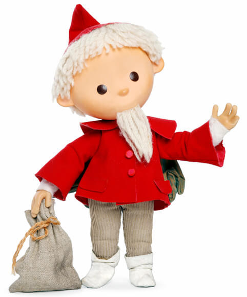

Der Sandmann
Der Sandmann kommt jeden Abend um 19 Uhr im Vorabendprogramm
Der Sandmann kommt jeden Abend um 19 Uhr im Vorabendprogramm
Flaschengeister(oft auch als Dschinn oder Genie bezeichnet) sind in ein verzaubertes Gefäß gesperrte Geister. Wenn jemand dieses Gefäß öffnet, und so den Geist daraus befreit, dann ist der Geist verpflichtet, diesem drei Wünsche zu erfüllen. Der Flaschengeist ist aber nicht selten nur wiederwillig dazu bereit. Er legt dann die geäußerten Wünsche zu ungunsten des Wünschers aus, vor allem wenn diese sehr egoistisch oder materialistischer Natur sind